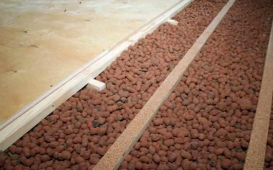
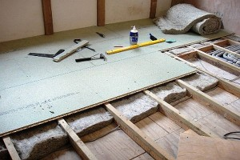
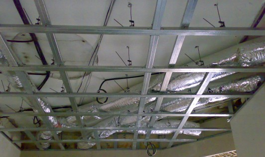
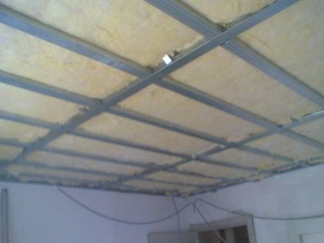

Теплоизоляция ( утепление ) потолка

В мире, где практически каждый день происходит повышение цен на энергетические ресурсы, вопрос утепления жилой площади стоит как нельзя остро. Вот и задаётся человек вопросом о том, как сделать так, чтобы и дома тепло было и при этом расходовалось минимум энергии. Как правило, такой вопрос решается однозначно – комплексное утепление потолка, утепление стен и утепление пола дома. Только таким образом можно добиться поставленной цели.
Зачем нужно делать утепление потолка?Такой комплексный подход к решению этой проблемы неминуемо ведёт к капитальному ремонту квартиры или дома, который, кстати, сделать во всей квартире одновременно под силу далеко не каждому человеку. На это может быть много разных причин. Но дело не в этом, раз уж вы задались вопросом утепления, то рано или поздно вам придётся с ним столкнуться вплотную и воплотить его в жизнь хотя бы частично.
А знаете ли вы, что большая часть старательно нагретого батареями тёплого воздуха улетучивается на улицу не через плотно незакрывающиеся окна и даже не через стены, а через потолок? Это обусловлено элементарными законами физики – тёплый воздух непременно поднимается вверх. Именно по этой причине и следует уделить основное внимание потолку и хорошенько утеплить его – эта задача не менее важная, чем, скажем, замена прохудившихся окон. Спросите, как сделать утепление потолка дома? И реально ли это организовать своими руками? Да – это реально. Мало того, это просто и даже не требует больших капитальных вложений.
Как утеплить потолок со стороны чердака?Существует два способа качественно выполнить утепление потолка в частном доме – это утеплить непосредственно сам потолок в доме с использованием современных минеральных материалов и осуществить утепление потолка сверху, на чердачном помещении. Какой из способов для вас более приемлем, выбирать необходимо исходя из того, где вы живёте – жителям частного сектора и последних этажей высоток больше подойдёт способ утепления потолка со стороны чердака, а жителям квартир придётся довольствоваться утеплением потолка в своей квартире. Если же судьба сделала вам подарок и преподнесла право выбора между тем и другим способом, то лучше будет остановиться на утеплении потолка со стороны чердака – это и дешевле и быстрее.
Наши праотцы для достижения этой цели пол чердака застилали соломой, позже уже стали использовать не менее тёплый шлак или керамзит. В наше же время бурного развития промышленности и всевозможных технологий, такой материал используется редко – всё как-то больше химия. Оно и понятно – искусственно созданный материал обладает куда лучшей способностью утеплять помещение, да и служит он в разы дольше и стоит дешевле.

{kind=link}

{kind=link}

{kind=link}
Почему именно минеральной ватой нужно производить утепление потолков внутри помещения? Всё просто, все остальные искусственно созданные утеплители являются паронепроницаемым материалом – а это значит, что вы лишите помещение возможности «дышать» в результате чего влажность в вашей квартире значительно повысится и как следствие появится грибок и плесень. Не спасёт даже принудительная вентиляция.

{kind=link}
Про то, как вставить утеплитель под натяжные потолки стоит поговорить подробней – на сегодняшний день это наиболее популярный способ украсить своё жилище. Здесь следует прибегнуть сразу к нескольким способам – придётся утеплитель приклеить к потолку и прижать его каркасом. Мало того, дополнительно ещё нужно защитить натяжную плёнку от осыпающегося с течением времени утеплителя – поверх каркаса необходимо натянуть так называемый паробарьер. Именно он защитит плёнку от осыпания минеральной ваты и даст возможность парам воды беспрепятственно впитываться в плиты перекрытия. Самое главное не перепутать какой стороной и куда его натягивать.
Вот в принципе и всё, что нужно знать о том как выполняется утепление потолка изнутри или с наружи помещения.